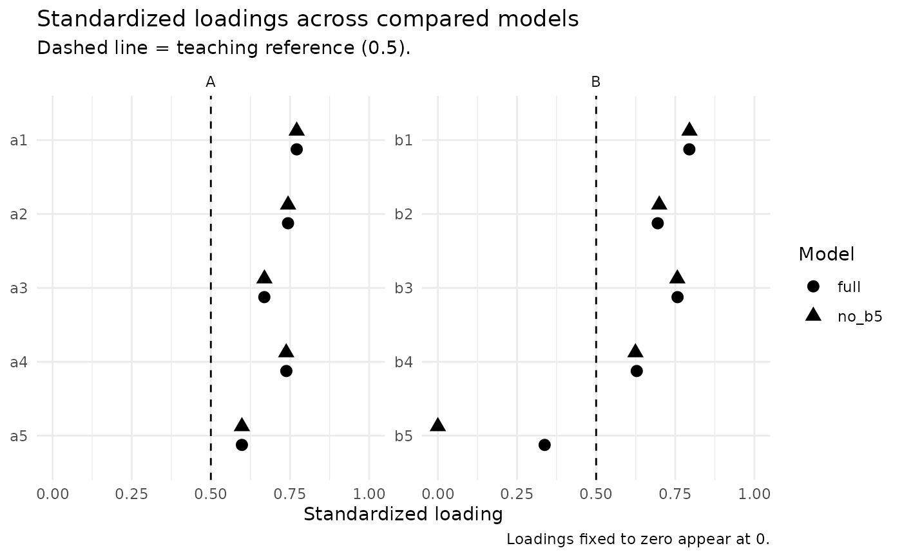

nomo_compare() places two or more fitted nomo_cfa() models side by side
and reports the evidence that bears on the comparison: a difference test
matched to the estimator when the models are nested, changes in global fit
indices, information criteria when they are defined, and standardized
loadings, reliability, and construct-separation evidence for each model. A
researcher rationale is required and recorded. The function never selects a
"winning" model.
Usage
nomo_compare(
...,
rationale,
origin = c("a_priori", "post_hoc"),
nested = c("auto", "yes", "no"),
reference = 1L,
method = "default",
evidence = TRUE,
guidance = nomo_defaults()
)Arguments
- ...
Two or more
nomo_cfaobjects. Argument names become model labels, for examplenomo_compare(full = cfa_full, reduced = cfa_reduced, rationale = "...").- rationale
Required character scalar recording why these models are compared (for example, the theoretical question each model represents).
- origin
Whether the comparison was planned before seeing results (
"a_priori") or prompted by results such as modification indices or residuals ("post_hoc"). Post-hoc comparisons are flagged in the decision log.- nested
"auto"(default) checks nesting automatically;"yes"declares the models nested;"no"declares them non-nested and skips the difference test.- reference
The model every other model is compared with, as an index or label. Defaults to the first model.
- method
Difference-test method passed to
lavaan::lavTestLRT()."default"lets lavaan choose the method appropriate to the estimator.- evidence
Logical. If
TRUE(default), compute side-by-side reliability (nomo_reliability()) and convergent/discriminant (nomo_validity()) evidence for each model.- guidance
Guidance settings from
nomo_defaults().
Value
A nomo_compare object containing $models (fit and information
criteria for each model), $comparisons (nesting, difference test, changes
in fit, and interpretation for each model against the reference),
$loadings (standardized loadings side by side), $evidence
(reliability, AVE, and HTMT2 by model), the fitted nomo_cfa objects in
$fits, references, and a decision log.
Details
Requirements. All models must be converged nomo_cfa objects fitted with
the same estimator and missing-data handling to the same cases and data.
Otherwise the comparison is refused with an explanation, because test
statistics and fit indices would not be comparable.
Nesting. With nested = "auto", nesting is checked from the models'
implied moments with semTools::net() (Bentler & Satorra, 2010). The
difference test is reported only for nested models. If the check cannot run
(for example for some categorical models), set nested = "yes" when one
model is obtained from the other by fixing or constraining parameters. A
declaration that the check contradicts is recorded as a concern and no test
is reported.
Difference tests. Tests come from lavaan::lavTestLRT(): the ordinary
chi-square difference test for ML, the scaled difference test for robust ML
estimators (Satorra & Bentler, 2001), and the scaled-and-shifted test for
categorical estimators such as WLSMV (Satorra, 2000). The method lavaan used
is reported. A test that lavaan cannot compute, or a negative scaled
statistic, is reported as unavailable with lavaan's message rather than
replaced by a different method; method can request an alternative
explicitly.
Information criteria. AIC and BIC are reported for likelihood-based estimators when the models contain the same observed variables. They are not defined for WLSMV and are reported as unavailable, not substituted.
Removing an item. Models with different observed variables describe
different data, so neither a difference test nor information criteria
applies; only descriptive evidence is shown. To test whether an item is
needed, keep it in both models and fix its loading to zero in the reduced
model (for example B =~ b1 + b2 + b3 + b4 + 0*b5). Reliability for such a
model still includes the zero-loading item in the composite, and the
evidence table says so.
References
Akaike, H. (1974). A new look at the statistical model identification. IEEE Transactions on Automatic Control, 19(6), 716-723. doi:10.1109/TAC.1974.1100705
Bentler, P. M., & Satorra, A. (2010). Testing model nesting and equivalence. Psychological Methods, 15(2), 111-123. doi:10.1037/a0019625
Burnham, K. P., & Anderson, D. R. (2004). Multimodel inference: Understanding AIC and BIC in model selection. Sociological Methods & Research, 33(2), 261-304. doi:10.1177/0049124104268644
Chen, F. F. (2007). Sensitivity of goodness of fit indexes to lack of measurement invariance. Structural Equation Modeling, 14(3), 464-504. doi:10.1080/10705510701301834
Cheung, G. W., & Rensvold, R. B. (2002). Evaluating goodness-of-fit indexes for testing measurement invariance. Structural Equation Modeling, 9(2), 233-255. doi:10.1207/S15328007SEM0902_5
MacCallum, R. C., Roznowski, M., & Necowitz, L. B. (1992). Model modifications in covariance structure analysis: The problem of capitalization on chance. Psychological Bulletin, 111(3), 490-504. doi:10.1037/0033-2909.111.3.490
Raftery, A. E. (1995). Bayesian model selection in social research. Sociological Methodology, 25, 111-163. doi:10.2307/271063
Satorra, A. (2000). Scaled and adjusted restricted tests in multi-sample analysis of moment structures. In Innovations in multivariate statistical analysis (pp. 233-247). Springer. doi:10.1007/978-1-4615-4603-0_17
Satorra, A., & Bentler, P. M. (2001). A scaled difference chi-square test statistic for moment structure analysis. Psychometrika, 66(4), 507-514. doi:10.1007/BF02296192
Satorra, A., & Bentler, P. M. (2010). Ensuring positiveness of the scaled difference chi-square test statistic. Psychometrika, 75(2), 243-248. doi:10.1007/s11336-009-9135-y
Schwarz, G. (1978). Estimating the dimension of a model. The Annals of Statistics, 6(2), 461-464. doi:10.1214/aos/1176344136
See also
nomo_cfa() to fit the models.
Examples
full <- nomo_cfa(
"A =~ a1 + a2 + a3 + a4 + a5\nB =~ b1 + b2 + b3 + b4 + b5",
data = nomo_demo_continuous
)
# Keep b5 in the data but fix its loading to zero to test whether it is needed
no_b5 <- nomo_cfa(
"A =~ a1 + a2 + a3 + a4 + a5\nB =~ b1 + b2 + b3 + b4 + 0*b5",
data = nomo_demo_continuous
)
cmp <- nomo_compare(
full = full,
no_b5 = no_b5,
rationale = "Evaluate whether the weakly loading item b5 contributes to factor B."
)
cmp
#> <nomo_compare>
#> Models: 2 | Reference: full | Estimator: ML | Cases: 473 | Origin: a-priori
#> Rationale: Evaluate whether the weakly loading item b5 contributes to factor B.
#>
#> Compared with `full`:
#> - no_b5 (nested, more constrained): chi-square difference = 46.91, df = 1, p < .001; dCFI -0.029, dRMSEA +0.022; dAIC +44.9
#>
#> No model was selected automatically. Use summary() for interpretations and measurement evidence.
nomo_table(cmp, "comparisons")
#> # A tibble: 1 × 23
#> model reference relation nested_declared nesting_check nested df_difference
#> <chr> <chr> <chr> <chr> <chr> <lgl> <dbl>
#> 1 no_b5 full more_const… auto nested TRUE 1
#> # ℹ 16 more variables: test <chr>, method <chr>, chisq_diff <dbl>,
#> # df_diff <dbl>, p_value <dbl>, test_available <lgl>, test_note <chr>,
#> # delta_cfi <dbl>, delta_tli <dbl>, delta_rmsea <dbl>, delta_srmr <dbl>,
#> # delta_aic <dbl>, delta_bic <dbl>, ic_available <lgl>, ic_note <chr>,
#> # interpretation <chr>
# \donttest{
summary(cmp)
#> nomologR measurement-model comparison
#> Rationale: Evaluate whether the weakly loading item b5 contributes to factor B.
#> Origin: a-priori | Reference model: full
#>
#> Model fit and information criteria
#> # A tibble: 2 × 11
#> model npar df chisq cfi tli rmsea srmr aic bic
#> <chr> <dbl> <dbl> <dbl> <dbl> <dbl> <dbl> <dbl> <dbl> <dbl>
#> 1 full 21 34 75.8 0.973 0.965 0.051 0.052 11981 12068.
#> 2 no_b5 20 35 123. 0.944 0.928 0.073 0.093 12026. 12109.
#> fixed_zero_loadings
#> <int>
#> 1 0
#> 2 1
#>
#> Comparisons with the reference model
#> # A tibble: 1 × 12
#> model relation nesting_check method chisq_diff df_diff p_value
#> <chr> <chr> <chr> <chr> <dbl> <dbl> <dbl>
#> 1 no_b5 more_constrained nested standard 46.9 1 0
#> delta_cfi delta_rmsea delta_srmr delta_aic delta_bic
#> <dbl> <dbl> <dbl> <dbl> <dbl>
#> 1 -0.029 0.022 0.042 44.9 40.8
#>
#> Interpretation
#> - `no_b5` is nested within `full` and has 1 more degree(s) of freedom (additional constraints). Chi-Squared Difference Test: chi-square difference = 46.91, df = 1, p < .001. A small p-value indicates that the extra constraints are not fully consistent with the data; with large samples, even small misspecifications produce small p-values. Change in fit (`no_b5` minus `full`): CFI -0.029, TLI -0.036, RMSEA +0.022, SRMR +0.042. AIC +44.9 and BIC +40.8 (`no_b5` minus `full`); lower values favor a model for these data, and only differences are interpretable. No model is selected automatically; read this evidence with theory and the recorded rationale.
#>
#> Standardized loadings by model
#> # A tibble: 10 × 4
#> factor item full no_b5
#> <chr> <chr> <dbl> <dbl>
#> 1 A a1 0.771 0.771
#> 2 A a2 0.744 0.744
#> 3 A a3 0.669 0.669
#> 4 A a4 0.738 0.738
#> 5 A a5 0.598 0.598
#> 6 B b1 0.794 0.795
#> 7 B b2 0.695 0.699
#> 8 B b3 0.757 0.757
#> 9 B b4 0.628 0.624
#> 10 B b5 0.337 0
#>
#> Measurement evidence by model
#> # A tibble: 14 × 4
#> model construct metric estimate
#> <chr> <chr> <chr> <dbl>
#> 1 full A omega 0.835
#> 2 full B omega 0.784
#> 3 full A alpha 0.827
#> 4 full B alpha 0.771
#> 5 full A AVE 0.497
#> 6 full B AVE 0.434
#> 7 full B vs A HTMT2 0.533
#> 8 no_b5 A omega 0.835
#> 9 no_b5 B omega 0.622
#> 10 no_b5 A alpha 0.827
#> 11 no_b5 B alpha 0.771
#> 12 no_b5 A AVE 0.497
#> 13 no_b5 B AVE 0.521
#> 14 no_b5 B vs A HTMT2 0.533
#> Notes:
#> - Loading(s) fixed to zero for b5 keep those item(s) in this composite; the coefficient does not describe a shortened scale.
#>
#> No model was selected automatically. Difference tests, changes in fit, information criteria, and measurement evidence answer different questions; read them together with theory and the recorded rationale.
plot(cmp, type = "loadings")

# }